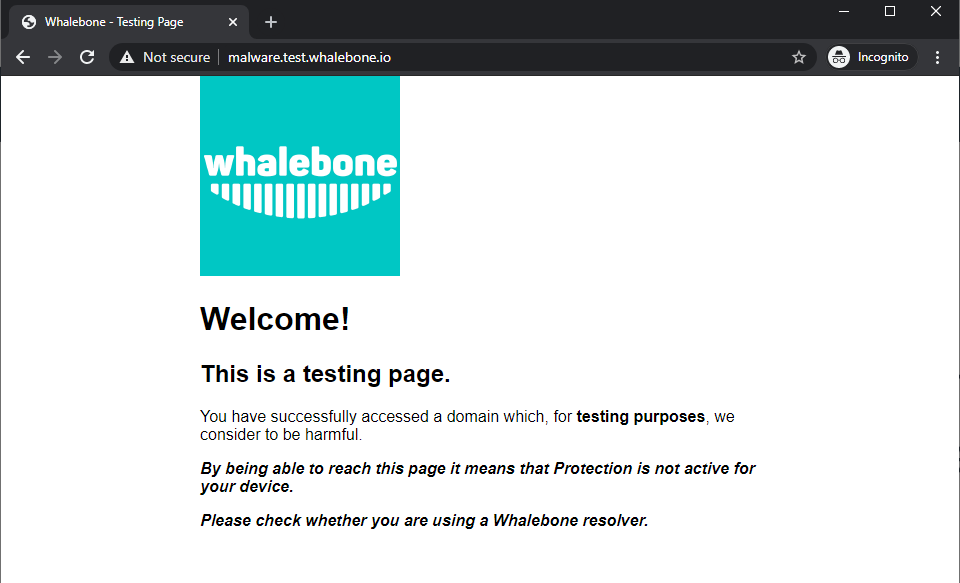
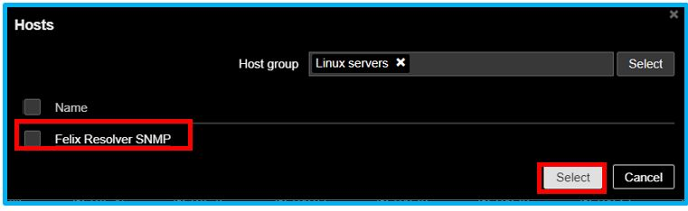
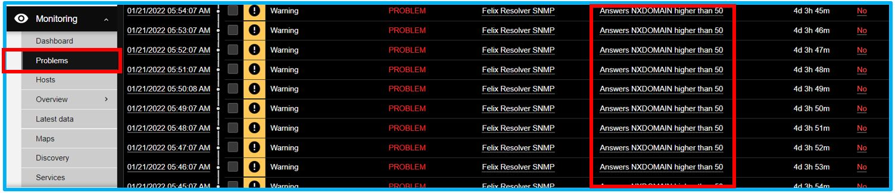

Whalebone local resolver brings the advantage of visibility of local IP addresses that send the actual requests. Whalebone resolver is based on the implementation of Knot Resolver developed in the CZ.NIC labs.
Local resolver is supported on dedicated (hardware or virtual) machine running a supported operating system.
Supported operating system (64-bit, server editions of following distributions):
Red Hat Enterprise Linux 7, 8
CentOS 7, 8
Debian 9, 10
Ubuntu 16.04, 18.04, 20.04
Supported filesystems
ext4
xfs only with d_type support (ftype=1)
Minimum hardware sizing (physical or virtual):
2 CPU cores
4 GB RAM
40 GB HDD (at least 30 GB in /var partition)
Warning
Please note that Whalebone only supports deloyments without desktop environments such as GNOME, KDE or Xfce as those can impact available memory and DNS processing on the server.
Network setup requirements (local resolver needs the following ports opened):
Direction
Protocol(s)
Port
Destination IP/Domain
Description
Outbound
TCP+UDP
53
Any
DNS resolution
Outbound
TCP
443
resolverapi.whalebone.io
Threat Database updates
Outbound
TCP
443
stream.whalebone.io
Threat Database updates
Outbound
TCP
443
logger.whalebone.io
Logging stream
Outbound
TCP
443
agentapi.whalebone.io
Resolver management
Outbound
TCP
443
transfer.whalebone.io
Support Log collection
Outbound
TCP
443
portal.whalebone.io
Admin portal
Outbound
TCP
443
harbor.whalebone.io
Resolver updates
Outbound
TCP
443
download.docker.com
Installation Process
Outbound
TCP
443
data.iana.org
DNSSEC keys
Warning
Without communication on port 443 to the domains listed above the resolver won’t be installed at all (the installation script will abort).
The Blocking Pages are being hosted directly on the Resolvers so the IP addresses that are advertised to the clients must be used. The clients will then be redirected to the IP address of the resolver upon blocking. It is advised to allow only subnet(s) assigned to customers or trusted networks, otherwise it can be misused for various attacks or unauthorized users.
Direction
Protocol
Port
Source IP/Domain
Description
Inbound
TCP
80
Customer’s subnet range(s)
Redirection/Blocking page
Inbound
TCP
443
Customer’s subnet range(s)
Redirection/Blocking page
The resolver’s processes need to communicate on localhost. In case some firewall is in place please make sure that the traffic is allowed, i.e. iptables-AINPUT-s127.0.0.1-jACCEPT
Direction
Protocol
Port
Source IP/Domain
Description
Inbound
TCP
ANY
127.0.0.1
Resolver’s processes communication
Note
Should you need sizing estimation for large ISP or Enterprise network contact Whalebone. Whalebone local resolver will need approx. twice the RAM and CPU than usual resolver (BIND, Unbound).
You can watch step-by-step video guide about installation procedure below:
In menu Resolvers press the button Create new. Choose a name (identifier) for your new resolver. The input is purely informative and won’t affect the functionality.
Once you’ve entered the name, click Add resolver button
After clicking the button an informative window will pop up with list of supported platforms and the one-line command for the installation. Copy the command and run on the machine dedicated for the local resolver.
The command will run the installation script and will pass the one time token used for the resolver activation (the same command can not be used repeatedly).
Once the command is run the operating system is being checked and requirements installed. Script will inform you about the progress and it creates a detailed log named wb_install.log in current directory.
Successful run of the installation script is ended with the notification `FinaltuningoftheOS` with value [OK]. Right after the installation also the initialization takes place and it could take several minutes before the resolver starts the services.
Warning
Local resolver is configured as an open resolver. It will respond to any request sent. This is quite comfortable in terms of availability of the services, but also could be a risk if the service is available from the outside networks. Please make sure you limit the access to the local resolver on port 53 (UDP and TCP) from the trusted networks only, otherwise it can be misused for various DoS attacks.
Important
The resolver’s processes need to communicate on localhost. In case some firewall is in place please make sure that the traffic is allowed, i.e. iptables-AINPUT-s127.0.0.1-jACCEPT
Whalebone resolvers come with a set of testing domains for the verification of the installation and the Security filtering.
These domains can be used in order to ensure that you are effectively using a Whalebone resolver:
http://malware.test.attacker.online
http://c2server.test.attacker.online
http://spam.test.attacker.online
http://phishing.test.attacker.online
http://coinminer.test.attacker.online
Upon visiting these domains a blocking page similar to the following should be presented:
In case you come across the page below, it means that the request was not blocked and thus a Whalebone resolver is not being used.
Please review your settings and if the issue persists, please contact support.

Blocking Page - Whalebone Resolver is not being used
You can watch step-by-step video guide of basic security policy configuration below:
You can watch step-by-step video guide with deeper xplanation of security policy tuning below:
The behavior of DNS filtering on the resolvers could be defined in the menu item Configuration and tab Security poicies. In the default state there is only the Default policy, which is automatically assigned to any new resolver.
In any policy there are several options to be defined:
Malicious domains filtering
Allows to apply actions Audit (logging) or Block (redirect to blocking page) on resolution of malicious domains
Individual actions could be turned off - e.g. turn off the blocking for testing purposes
The slider values define the probability that the particular domain is malicious on the scale from 0 to 100 (0 is a safe domain, 100 is malicious)
There are available preconfigured policies that cover the most usual cases. This cases are: Don’t Block, Block carefully and Block strictly.
Tip
The default threshold for blocking is set to 80 which is safe even for larger network with liberal policy towards the users. For more restrictive policy we suggest setting threshold for blocking to 70-75, in very restrictive networks even down to 60. Audit is purely informative, however setting the threshold too low can result in too many logged incidents.
Types of threats
The default behavior is to include all types of threats
The drop-down menu allows the user to choose a more granular category of the threats they would like to audit or block. The available categories are: blacklist, c&c, coinminer, compromised, malware, phishing and spam.
A full list of what each category includes can be found below:
C&C (Command and Control): domains that facilitate botnet communication to coordinate its activity. A botnet is a network of infected computers, which are controlled as a group.
Malware: domains that host and distribute any kind of malicious code
Phishing: domains aiming to trick users and extract sensitive information such as credit card details, login credentials, etc
Blacklist: domains that are known to serve multiple nefarious purposes at the same time or over a period of time
Spam: domains that are linked to spreading spam emails and scam schemes.
Compromised: otherwise legitimate domains that have been hacked and are temporarily used for malicious purposes
Coinminer: domains that hijack processing and energy resources for unsolicited cryptocurrency mining
Whitelist
Domains that won’t be blocked at any time (higher priority has only Blacklist)
The whitelist is applied to the domain and all of the subdomains, e.g.: whitelisted domain whalebone.io will also whitelist docs.whalebone.io, but not vice versa
The list can be configured on the Blacklist/ Whitelist tab
Blacklist
Domains that will be blocked at all times
The blacklist is applied to the domain and all of the subdomains, e.g.: blacklisted domain malware.ninja will also blacklist super.malware.ninja, but not vice versa
The list can be configured on the Blacklist/ Whitelist tab.
Warning
After creating a blacklist or a whitelist, it should be assigned to the specific security policy, or else the changes will not take effect.
Note
Changes will be applied to the resolvers in approx. 2-3 minutes. Saved configuration is used during preparation of the threat data package for the resolvers that download and apply those packages at regular intervals.
Regulatory Restrictions
Integrated list of domains that must be applied in order to conform to Regulatory Restrictions of a country.
Examples of these domains include cases of illegal gambling or child pornograpy.
Warning
Each country has different Regulatory lists. In case of multi-country deployments different policies can be used in order to apply the proper Regulatory Restrictions.
Content Filtering
Particular Content categories can be applied on a per-policy level. This is useful in case different segments of the networks come with different requirements. For example, in case of a School environment all the Adult categories can be enabled and access to relevant content can be restricted.
A diverse set of content filtering categories are available:
Porn: sexual and pornographic material
Gambling: games and activities involving betting money
Weapons: guns and weapon-related sites
Audio-video: audio and video streaming services
Games: online games and gaming websites
Chat: instant messaging and chatting applications
Social-networks: social networking sites and applications
Drugs: drug related websites including alcohol and tobacco
Racism: content linked to racism and xenophobia
Violence: explicit violence and gore
Terrorism: domains linked to terrorism support
Advertisement: banners, context advertisements and other advertisements systems
Tracking: web and email tracking systems
Fake news: domains hosting fake news
Coinminers: domains connected to crypto-currency mining activities
You can find the options to configure the resolver in the menu Configuration and tab DNS resolution. This page allows you to do the basic configuration without the knowledge of configuration syntax. Furthermore there is a text area allowing you to define any configuration to the underlying Knot Resolver.
Available configuration options:
Enable IPv6
Should the system has the IPv6 properly configured and working, it is possible to enable it. Otherwise the activation of IPv6 could have negative effects on the performance and latency of the resolver.
Forward queries to
This option allows to redirect all or chosen queries to upstream resolvers or authoritative DNS servers (suitable e.g. for forwarding to domain controllers of Active Directory)
Disable DNSSEC
If checked, the answers from the forwarded queries won’t be DNSSEC validated. We recommend to check this option should the upstream server have not DNSSEC configured properly.
All queries to
Option to forward all queries to one or more resolver
Following domains
Option to choose particular domains that should be forwarded to on more resolvers
Different resolvers could be defined for different domains
Static records
Predefined answers that should be returned for particular domains
Could serve for special purposes such as monitoring or very simple substition of records on authoritative server
In the case of blocking access to a domain (due to security, content or regulatory reasons), the resolvers are answering to the clients with a specific IP address that leads to the Blocking pages. Should the clients initiate the HTTP(S) connections towards the blocked domain, they are presented with the custom Blocking page with different content based on the reason of the blocking.
You can watch step-by-step video guide below:
Whalebone provides sample template pages for the Blocking Pages, however, they do not have to be followed and virtually every modification, branding and copywriting is possible. The template code is written to be compatible with the widest range of browsers to avoid problems with older versions.
Different versions of the Blocking Pages can be assigned to different segments of the networks.
For each version, based on the deployment details, there are four variants of the Blocking Pages that are available and can be configured:
Security: displayed when access is blocked due to security reasons
Blacklist: displayed when access is blocked by the Administrators
Regulatory: displayed when access is regulated due to law or court order
Content: displayed when access is blocked due to the content of the domain
Furthermore, each version can have different localization options. The language that is going to be presented to the user is infered from the language of the browser that is visiting the Blocking Page. New locales can be seamlessly added as an option.
For each Locale several options are available. In the example above, the English version has the following options:
1) Use Template
When using the template option, the information that are provided as input to the following form are injected in the template code. This is the fastest and easiest way to customize the blocking pages.
This option can customize the default language of the Blocking Pages. In case some browser does not declare its preferred language, the “Default” language acts as a fallback mechanism.
3) Delete the locale
In case the locale is no longer needed, it can be deleted.
Each of the Versions of the Blocking Page (Security, Blacklist, Regulatory, Content) can be customized in more detail by modifying the HTML code. Upon clicking on each version an editor is presented that allows for any required changes.
The editor also exposes a “Verification” interface which parses the final HTML code and checks for the enabled functionalities. The check is based on the id of the specific elements. More information and requirements for each functionality can be found by clicking the respective labels.
Note
Each Version of the Blocking Page has unique characteristics that can be selected. For example, the Security Blocking Page can include a “Bypass” button which is not available in the respective Regulatory and Blacklist versions.
After editing and saving the changes to the Blocking Pages it is important that they are applied to the individual resolvers. More information can be found at the Configure Blocking Pages Section
Tip
The Redirection Pages are served from a web server directly on the Resolvers. The pages are expected to be a single file so any additional resources (CSS, images, scripts) must be either embedded directly in the HTML code or served from a publicly accessible web server. The resolver does not provide any option to serve other content.
In the main resolver overview there are tiles with resolver details and configuration options. The overview includes information about operating system and resources as CPU, Memory and HDD usage. Therre is also the state of services running on the resolvers (should state “Running” if everything is OK) and the status of the communication channel between the resolver and the cloud (it is expected to be “Active”).
Should you change any configuration related to the DNS resolution, you have to deploy the configuration afterwards. If there are any configuration changes available to be deployed, there will be a red icon with down right arrow visible on the resolver card. Once clicked, the webpage will ask for confirmation and the successful deployment will be notified in the top right corner.
Note
If the result is an deployment error, try to repeat the action. The reason for the error could be a short term communication outage between the cloud and the resolver.
Security and content polices can be asssigned in a granular manner to different segments of the network.
The setting applies per resolver and can be configured under Resolvers > <Nameoftheresolver> > Policy Assignment
Note
The configuration is per resolver. In case you want to apply the configuration to more than one resolvers, please modify all the necessary resolvers.
The policies can be applied by adding IP ranges in the available input form:
In order to provide a better understanding let’s consider an example with the network range 10.10.0.0/16.
We have created 3 different policies:
Default: the policy that we want to apply to the whole network, this is the most generic policy
Exception: a policy that must be applied to a specific segment in the network which will have all security and content filtering disabled.
School: a policy that we want to apply to 2 different subnets that have been assigned to school environments. In this case we have chosen to be more strict in the blocking.
Note
The first policy that is defined acts as a default policy and is applied in cases where a more granular policy for a network range is not available. This policy is always on the top of the list, is marked with a special icon and cannot be deleted.
Let’s summarize the requirements in the following matrix:
Policy
Network
Default
10.10.0.0/16
Exception
10.10.10.0/24
School
10.10.20.0/24 and 10.10.40.0/24
In the following capture the process of assigning the policies is described:
Note
After adding the networks, and in order to take effect, you must click on Save to resolver. The changes will be then validated and a pop-up message will provide additional information.
In order to assign additional entries to an existing assignment, a new network range can be appended using newline as a separator.
Building on the previous example, in case we wanted to add the subnet 10.10.30.0/24 to the Exception Policy:
In a similar manner to the Security Policies, the Blocking Pages can be also assigned to particular network ranges.
The first step is to select On-premiselocalresolver for the BlockingPageLocation option. Two new fields are enabled where the IPv4 and IPv6 addresses of the Blocking Pages must be completed.
Tip
The Blocking Pages are being hosted directly on the Resolvers so the IP addresses that are advertised to the clients must be used. The clients will then be redirected to the IP address of the resolver upon blocking. Please ensure that ports 80 and 443 are accessible on the firewall.
For each IP range that is added, there is a drop-down menu for the Blocking Page that should be assigned.
The first entry in the PolicyAssignment is considered the Default/Fallback. In case a client accesses the resolver from an undefined IP range, the respective options will apply.
Note
After making the necessary changes to the Blocking Page settings, please check whether the resolvers need to be re-deployed.
Agent’s actions can be invoked using a proxy bash script present at path /var/whalebone/cli. This script calls a python script which handles the execution of the following agent actions:
sysinfo - returns the system status data in JSON format.
Parameters: None
Output: tested categories on tested key can have two values ‘ok’ and ‘fail’
{"hostname":"hostname","system":"Linux","platform":"CentOS Linux 7 (Core)","cpu":{"count":4,"usage":28.6},"memory":{"total":7.6,"available":3.9,"usage":49.2},"hdd":{"total":50.0,"free":14.4,"usage":71.1},"swap":{"total":0.0,"free":0.0,"usage":0},"resolver":{"answer.nxdomain":3284,"answer.tc":35,"answer.ad":849,"answer.100ms":3983,"answer.cd":6,"answer.1500ms":74,"answer.slow":215,"answer.rd":224337,"answer.1ms":104683,"answer.servfail":215,"predict.epoch":24,"query.dnssec":6,"answer.250ms":14941,"query.edns":35498,"answer.cached":86713,"answer.nodata":3622,"answer.aa":2362,"answer.do":6,"answer.edns0":35498,"answer.ra":224337,"predict.queue":0,"answer.total":224337,"answer.10ms":35351,"answer.noerror":217216,"answer.50ms":59766,"answer.500ms":4642,"answer.1000ms":653,"predict.learned":80},"docker":{"Platform":{"Name":""},"Components":[{"Name":"Engine","Version":"17.12.1-ce","Details":{"ApiVersion":"1.35","Arch":"amd64","BuildTime":"2022-02-27T22:17:54.000000000+00:00","Experimental":"false","GitCommit":"88888fc6","GoVersion":"go1.999.999","KernelVersion":"3.22.66-693.21.1.el7.x86_64","MinAPIVersion":"1.99","Os":"linux"}}],"Version":"19.32.1-ce","ApiVersion":"1.98","MinAPIVersion":"1.12","GitCommit":"7390fc6","GoVersion":"go1.9.4","Os":"linux","Arch":"amd64","KernelVersion":"3.10.0-693.21.1.el7.x86_64","BuildTime":"2018-02-27T22:17:54.000000000+00:00"},"check":{"resolve":"ok","port":"ok"},"containers":{"lr-agent":"running","passivedns":"running","resolver":"running","kresman":"running","pcpy":"running","logrotate":"running","logstream":"running"},"images":{"lr-agent":"whalebone/agent:1.1.1","passivedns":"whalebone/passivedns:1.1.1","resolver":"whalebone/kres:1.1.1","kresman":"whalebone/kresman:1.1.1","logrotate":"whalebone/logrotate:1.1.1","logstream":"whalebone/logstream:1.1.1"},"error_messages":{},"interfaces":[{"name":"lo","addresses":["127.0.0.1","::1","00:00:00:00:00:00"]},{"name":"eth0","addresses":["1.1.1.1","::c8","fe80::","00:00:00:00:00:00"]},{"name":"docker0","addresses":["198.1.1.1","00:00:00:00:00:00"]}]}
stop - stops up to three containers
Parameters: containers to stop (up to 3), Example: ./cli.sh stop resolver lr-agent kresman
upgrade - upgrades up to three containers, the container’s configuration is specified by a docker-compose in agent container (can also be found in a volume /etc/whalebone/agent)
Parameters: containers to upgrade (up to 3), Example: ./cli.sh upgrade resolver lr-agent kresman
updatecache - forces the update of resolver’s IoC cache (which is used for blocking), this action should be done to manually force the update and refresh of the domains present in the malicous domain cache
Each of those actions execute similarly named actions and the status of that action, or output of that action, is printed. The list and run actions are intended for the scenario when a confirmation of a certain action is required. The action list shows the action that should be executed and the changes that would be done by that action for containers specified in that action. This serves as an example of what would happen if the awaiting action would have been executed. The run action then executes the awaiting action cleans up afterwards.
The actions of upgrade and create use the docker-compose template present in the agent container to create/upgrade the desired container. This template is mounted in the volume /etc/whalebone/agent if the user decides to change it. However this change needs to be done also to the template present at portal.whalebone.io, if not than the local changes will be overwritten from the cloud during next upgrade.
The bash script should be invoked like this: ./cli.sh action param1 param2 param3. Action is the action name and parameters are the action parameters. Only actions for container stop, remove and upgrade use these and specify what containers should be affected by the respective action.
The agent’s default option is to execute actions from the cloud management immediately. It is however possible to enable manual confirmation of requests. This gives the administrator control over when and what gets executed. To enable the resolver Strict mode, please create a ticket to Whalebone support.
To list changes the request introduces the cli option list option should be used. To execute the request use cli option run. There can only be one request pending in the queue. New request from the cloud will ovewrite the previous one, but the new one holds the full desired state anyway. To delete waiting request use cli option delete_request. The actions that can be persisted are: upgrade, create and suicide. Please see examples of the CLI command usage.
list - lists the awaiting command and the changes that would be made to the containers specified in the awaiting action, this action is intended for human check hence it’s format
Advanced configuration of Whalebone resolver allows to apply any Knot Resolver configuration. In this section we are going to describe the most frequent use cases and examples of such configuration snippets.
Views, policies and their actions are evaluated in the sequence as they are defined (except special chain actions that are described in the official Knot Resolver documentation). First match will execute the action, the rest of the policy rules is not evaluated. If you are going to combine different configuration snnippets, you can load the same module just once at the beginning of the configuration.
Define a list of IP ranges that will be allowed to use this DNS resolver. Queries from all other ranges will be refused.
-- load modulesmodules={'policy','view'}--define list of ranges to allow--127.0.0.1 should always be allowedallowed={'127.0.0.1/32','10.10.20.5/32','10.30.10.0/24'}-- allow list of rangesfori,subnetinipairs(allowed)doview:addr(subnet,policy.all(policy.PASS))end-- block all other rangesview:addr('0.0.0.0/0',policy.all(policy.DENY))
Define a list of IP ranges that will be blocked to use this DNS resolver. Queries from all other ranges will be allowed.
-- load modulesmodules={'policy','view'}--define list of ranges to blockblocked={'10.10.20.5/32','10.30.10.0/24'}-- block list of rangesfori,subnetinipairs(blocked)doview:addr(subnet,policy.all(policy.REFUSE))end
-- load modulesmodules={'policy'}--define list of allowed domainsdomains={'example.com','anotherexample.org'}-- allow list of domainsfori,domaininipairs(domains)dopolicy.suffix(policy.PASS,{todname(domain)})end
The resolver can expose its metrics in Prometheus text format.
The following script enables the HTTP module and the respective /metrics endpoint is made available.
Whaleboen SNMP agent is enabled in the resolvers to actively monitor the local resources, quires and statistics.
The agent gathers operational information locally and reports data to Zabbix server for processing. Moreover, Zabbix
offers excellent reporting and data visualization features based on the stored data from the resolver.
Zabbix is a monitoring tool that provides performance metrics such as network utilization, CPU and memory utilization. It also monitors network
disconnection and server unavailability.
To add the host, go to Configuration then click hosts. Click create host then provide the hostname, groups. After that add the resolver ip address.
Under the interface select the SNMP> Provide the SNMP Ip address > Port 161 > SNMP version SNMPv2 then add the SNMP Community.
After adding the host go to templates tab > Select the whalebone template. Click select and add.
After selecting the Whalebone template go back to host and click add. On the hosts tab we can see that the resolver has been added on the Zabbix.
Note
SNMP data from the resolver to Zabbix will take time to initialized. Wait the Zabbix to gather data from the server. Always observ the availability on the right corner to see if its gree. Green means its already connected to the whalebone resolver.
How to add the Whalebone widget on Zabbix dashboard
3.1 To add the dashboard, go to Monitoring then Dashboard. On the dashboard Global view, we can see the edit dashboard. Click the edit dashboard to add new graphs.
Note
Before adding graphs on the dashboard make sure that the host already detected the graphs. You can find the grapns on the configuration > hosts > graphs.
3.2 Click the dashboard and add widget > Select type > Graph. Provide a name of the widget.
3.3 Select a data set which is the hostname and select the item pattern where we can find the whalebone template.

3.4 Select the items you want to add on the widget for graphical visualization. After the adding item patern. Select base color for graphs then you can adjust the width, point size, transparency, and fill.
Triggers are logical expression that “evaluate” data gathered by items and represent the current system state. Triggers expression allow to define a threshold of what state of data is acceptable.
Therefore, if the incoming data surpass the acceptable state, a trigger is “fired” - or changes status to PROBLEM. Example if the whalebone resolver encountered 1,000 NXDOMAIN the trigger will be
intialized to notify us that the data has exceeded from the set threshold.
To configure the trigger, go to Configuration - Hosts. Click the triggers tab.
Create trigger > Provide name then add an expression. Let say we want to trigger if the resolver NXDOMAIN exceeds more than 60. Select severity for this trigger.
Click add > On the condition tab > Select the item. On here let’s select the NXDOMAIN.
On the condition tab, set the count > time shift now > result. On the result select an operand then set the value > 60. This condition will trigger if the NXDOMAIN exceed to 60.
Click insert and save the triggers. Make sure the trigger is enabled on the template.
On the problems tab you can check the NXDOMAIN that exceeds the threshold.

On the dashboard, we can identify that the NXDOMAIN exceeds the threshold.
Triggers action are logical expression that “evaluate” data gathered by items and represent the current system state. Trigger expression allow to define a threshold of what the data is “acceptable”. Therefore,
if the incoming data surpass the acceptable state, a trigger is “fired” or changes status to PROBLEM. For this example, lets say the NXDOMAIN exceeds to 60. The trigger will initialize an email for the admin
reporting or notification.
First step to set up a trigger action by using an email. Go to Administration and Media types. Create media type and provide Name > SMTP server > port > SMPTP email > user and pass.
After you setup the email > Go to Configuration > Actions > Action triggers. On the trigger Actions > Create Action > Provide a name > Add a condition.
On the new condition window, select the ff: Type: Trigger Operator : equals triggers: Select the NXDOMAIN.
Select the NXDOMAIN for Action Triggers. Click Add.
On the Actions > Click the Operation > Select the default operation to 1 min. On the operations click add.
Select the step duration to 1 minute. On the operation click add > Send to users > Add the Zabbix admin > Send only to > Email.
In order to uninstall a resolver and remove all Whalebone configuration files the following steps should be followed:
Warning
Before starting the process it should be noted that all the individual components that support the resolver functionality are being executed as docker containers. Steps 1 and 2 apply only in case the host server is dedicated and no other services are running as containers. Should the situation be different, please contact us and we will provide an up to date list of the containers that should be removed.
Stop and remove all the running docker containers:
The Local Resolver utilizes the Lightning.NET Library:
The OpenLDAP Public License
Version 2.8, 17 August 2003
Redistribution and use of this software and associated documentation
("Software"), with or without modification, are permitted provided
that the following conditions are met:
1. Redistributions in source form must retain copyright statements
and notices,
2. Redistributions in binary form must reproduce applicable copyright
statements and notices, this list of conditions, and the following
disclaimer in the documentation and/or other materials provided
with the distribution, and
3. Redistributions must contain a verbatim copy of this document.
The OpenLDAP Foundation may revise this license from time to time.
Each revision is distinguished by a version number. You may use
this Software under terms of this license revision or under the
terms of any subsequent revision of the license.
THIS SOFTWARE IS PROVIDED BY THE OPENLDAP FOUNDATION AND ITS
CONTRIBUTORS ``AS IS'' AND ANY EXPRESSED OR IMPLIED WARRANTIES,
INCLUDING, BUT NOT LIMITED TO, THE IMPLIED WARRANTIES OF MERCHANTABILITY
AND FITNESS FOR A PARTICULAR PURPOSE ARE DISCLAIMED. IN NO EVENT
SHALL THE OPENLDAP FOUNDATION, ITS CONTRIBUTORS, OR THE AUTHOR(S)
OR OWNER(S) OF THE SOFTWARE BE LIABLE FOR ANY DIRECT, INDIRECT,
INCIDENTAL, SPECIAL, EXEMPLARY, OR CONSEQUENTIAL DAMAGES (INCLUDING,
BUT NOT LIMITED TO, PROCUREMENT OF SUBSTITUTE GOODS OR SERVICES;
LOSS OF USE, DATA, OR PROFITS; OR BUSINESS INTERRUPTION) HOWEVER
CAUSED AND ON ANY THEORY OF LIABILITY, WHETHER IN CONTRACT, STRICT
LIABILITY, OR TORT (INCLUDING NEGLIGENCE OR OTHERWISE) ARISING IN
ANY WAY OUT OF THE USE OF THIS SOFTWARE, EVEN IF ADVISED OF THE
POSSIBILITY OF SUCH DAMAGE.
The names of the authors and copyright holders must not be used in
advertising or otherwise to promote the sale, use or other dealing
in this Software without specific, written prior permission. Title
to copyright in this Software shall at all times remain with copyright
holders.
OpenLDAP is a registered trademark of the OpenLDAP Foundation.
Copyright 1999-2003 The OpenLDAP Foundation, Redwood City,
California, USA. All Rights Reserved. Permission to copy and
distribute verbatim copies of this document is granted.


{kind=link}
{kind=link}
{kind=link}
{kind=link}
{kind=link}
{kind=link}
{kind=link}
{kind=link}
{kind=link}
{kind=link}
{kind=link}
{kind=link}
{kind=link}
{kind=link}
{kind=link}
{kind=link}